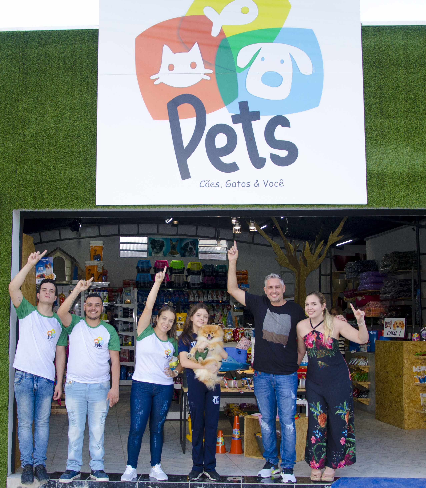

¿De donde nació Pets?
La empresa Pets fue fundada en el año 2018 gracias por Juan Pérez, quien buscaba crear un espacio donde los dueños de mascotas pudieran encontrar todo lo necesario para el cuidado de sus animales en un solo lugar.
Lo que comenzó como un pequeño emprendimiento local, con el tiempo fue creciendo gracias a la confianza y preferencia de nuestros clientes. Desde el primer día, nuestro compromiso ha sido promover la tenencia responsable de mascotas y asegurar su bienestar mediante un trato cercano, ético y profesional.
